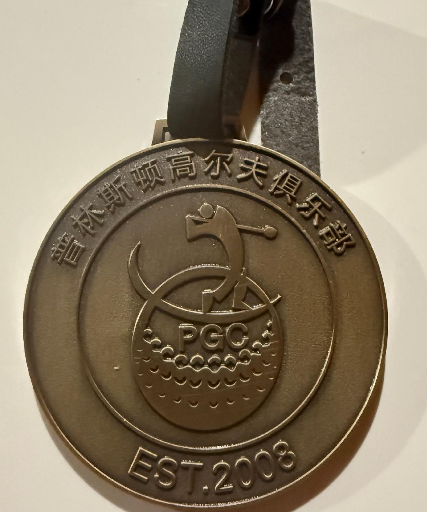
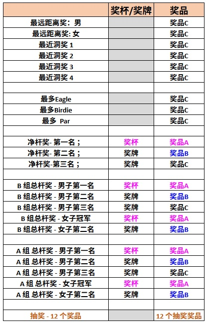

Every golf season Princeton Golf Club hosts 4 to 5 golf games to attract golf enthusiasts around New Jersey and surrounding areas to meet and compete. This is a place where you can make new friends and enjoy a couple of golf games.
Priceton Golf Club started in 2008 and it has since hosted many successful seasons of golf tournament. Please join us if you love golf and would like to meet some new friends.
Theresa Zhang这次是第一次赢得PGC的比赛。 在闷热的夏日下在这个比较难的球场打出了８５杆的好成绩。祝贺她第一次夺冠！

Jianzhong Ding在打完俱乐部比赛后有参加PGC比赛并打出了74杆的好成绩。丁博士最近的挥杆和成绩都有了很大的提高。 在最近的几场比赛里， 比如国窖杯的比赛里也打出了非常好的成绩。预祝丁博士今年百尺竿头再进一步！
李美莲一直强调打球要保持平静的心态， 不要被自己的情绪以及环境影响。她这次比赛成功贯彻了自己的计划， 尤其推杆时的自信和平和保证了她以78杆的成绩获得女子冠军。为这个赛季在PGC赢得好成绩打下了坚实基础。

Jim Huang最近状态非常好。比赛前在Forsgate打出了71杆的好成绩。这个良好的状态让他在这次比赛中战胜了山地球场的困难，非常自信获得了男子冠军。 充分展示了PGC老会长的实力。

2025 PGC Classic is sponsored by Kai Yang. It will be hosted at the beautiful The Architects Golf Club.
今年PGC和美中高尔夫俱乐部联合举办的首场赛事即将开启！比赛结束后，我们将举办盛大的颁奖晚宴，并准备了多项惊喜抽奖。
机会难得，名额有限，欢迎广大球友踊跃报名，一起挥杆竞技，共享高球盛宴！
⛳️比赛球场: 
The Architects Golf Club
700 Strykers Rd
Phillipsburg, NJ 08865
⏱比赛时间 ：八月十日
Tee times starting at 12:00

赛事联系人:
👩🏻王卫(Wei Wang)
👩🏻Christine He
有问题可以在群里@以上联系人

2025 PGC Open is sponsored by Jim Huang. It will be hosted at the beautiful Charleston Springs Golf Course
今年PGC的首场赛事即将开启！比赛结束后，我们将举办盛大的颁奖晚宴，并准备了多项惊喜抽奖。为了宣传和推广 PGC，本次赛事嘉宾将和会员收费相同，不收取额外费用！
机会难得，名额有限，欢迎广大球友踊跃报名，一起挥杆竞技，共享高球盛宴！
2025 PGC Classic is sponsored by Kai Yang. It will be hosted at the beautiful The Architects Golf Club.
今年PGC的首场赛事即将开启！比赛结束后，我们将举办盛大的颁奖晚宴，并准备了多项惊喜抽奖。
机会难得，名额有限，欢迎广大球友踊跃报名，一起挥杆竞技，共享高球盛宴！
2025 PGC Championship is sponsored by Heping Wang and Zili Ma. It will be hosted at the beautiful The Forsgate Country Golf Club Banks Course.
今年PGC的首场赛事即将开启！比赛结束后，我们将举办盛大的颁奖晚宴，并准备了多项惊喜抽奖。为了宣传和推广 PGC，本次赛事嘉宾将和会员收费相同，不收取额外费用！
机会难得，名额有限，欢迎广大球友踊跃报名，一起挥杆竞技，共享高球盛宴！

2025 PGC Cup is sponsored by Ping Tian & Jack Li. It will be hosted at the beautiful The Eagle Ridge Golf Club.
今年PGC的首场赛事即将开启！比赛结束后，我们将举办盛大的颁奖晚宴，并准备了多项惊喜抽奖。为了宣传和推广 PGC，本次赛事嘉宾将和会员收费相同，不收取额外费用！
机会难得，名额有限，欢迎广大球友踊跃报名，一起挥杆竞技，共享高球盛宴！

2025 PGC Masters Invitational is sponsored by Jim Huang. It will be hosted at the beautiful The Morgan Hill Golf Club.
Morgan Hill Golf Course, located in Easton, Pennsylvania, is a challenging and visually stunning 18-hole course designed by Kelly Blake Moran.
It's known for its dramatic elevation changes, scenic views, and unique layout that incorporates natural elements like bunkers, hollows, and wetlands.
The course has been praised for its challenging play and beautiful surroundings.
今年 PGC 的首场赛事即将开启！这次比赛设在具有挑战的Morgan Hill Golf Course. 相信很多球友都打过这个山地球场， 它有着漂亮的风景以及高高低低的球道给大家带来足够挑战。 比赛结束后将举办盛大的颁奖晚宴，我们除了给大家提供了下面众多奖项外， 还准备了丰厚的奖品给大家惊喜抽奖。机会难得，名额有限, 欢迎广大球友踊跃报名，一起挥杆竞技，共享高球盛宴!
这场比赛将分A和B两个组(flights)。按PGC球会记录的差点，前面50%的球员为A组，后面50%的球员为B组。比赛成绩会用于更新PGC球会的差点。
⛳️比赛球场:
Morgan Hill Golf Course
100 Clubhouse Dr
Easton, PA
⏱比赛时间 ：六月八日
Tee times starting at 12:00
参赛费用：
💰PGC会员: $120
💰非PGC会员: $150
费用包含球车，晚宴及酒水。此球场没有练习场。
🏆🍻颁奖晚宴:
⏱晚宴时间 ：6:30点开始
餐厅待定
Beer will be provided at dinner. Please drink responsibly!